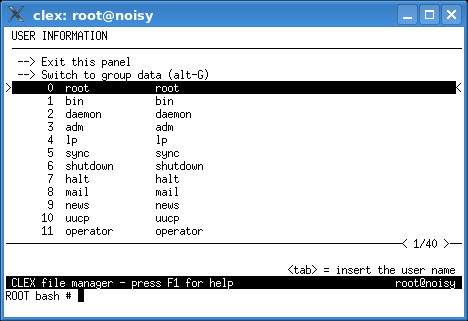

Screenshots (page 2 of 2)
An example of the name completion:
The completion and insertion panel:

The sort panel:

The comparison panel:

Examples of panel contents filtering:


The user and group information panel:

< previous page
